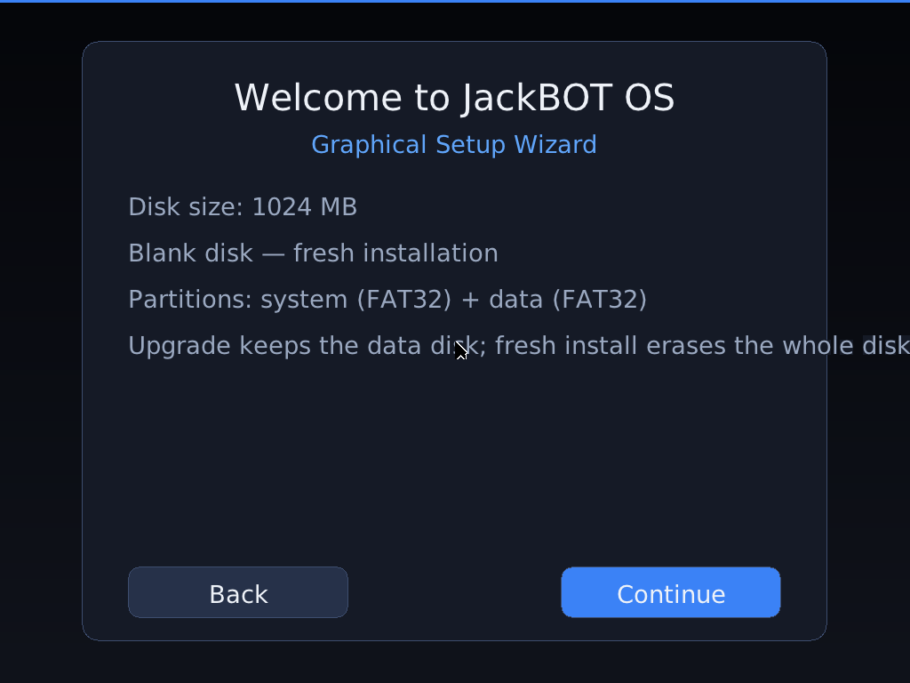
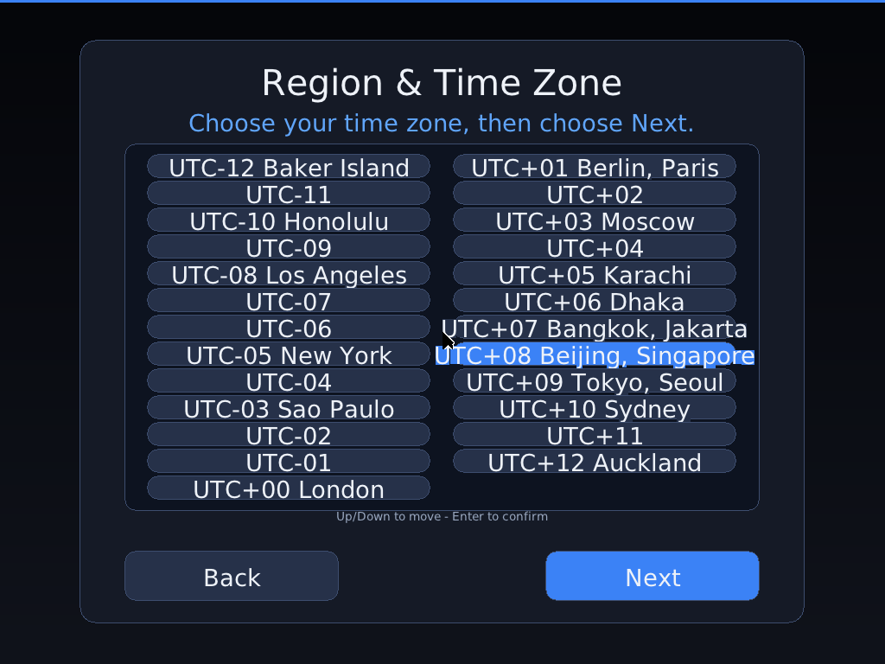
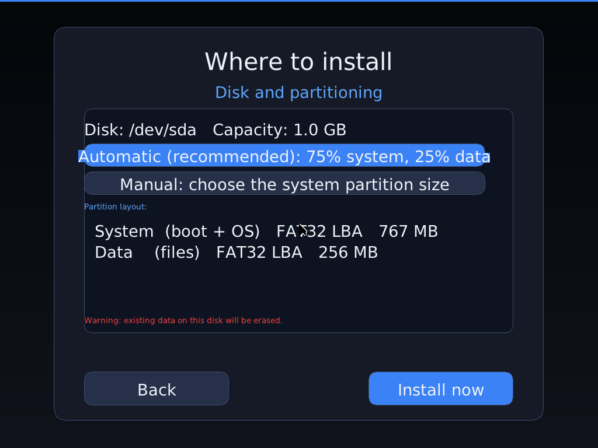
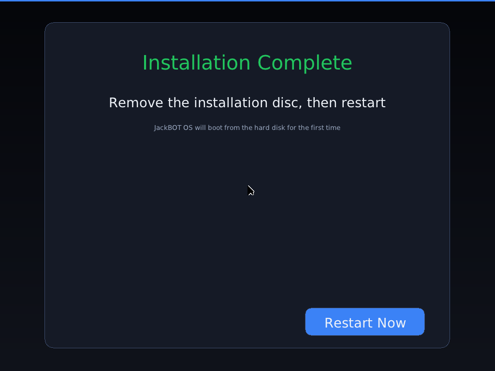
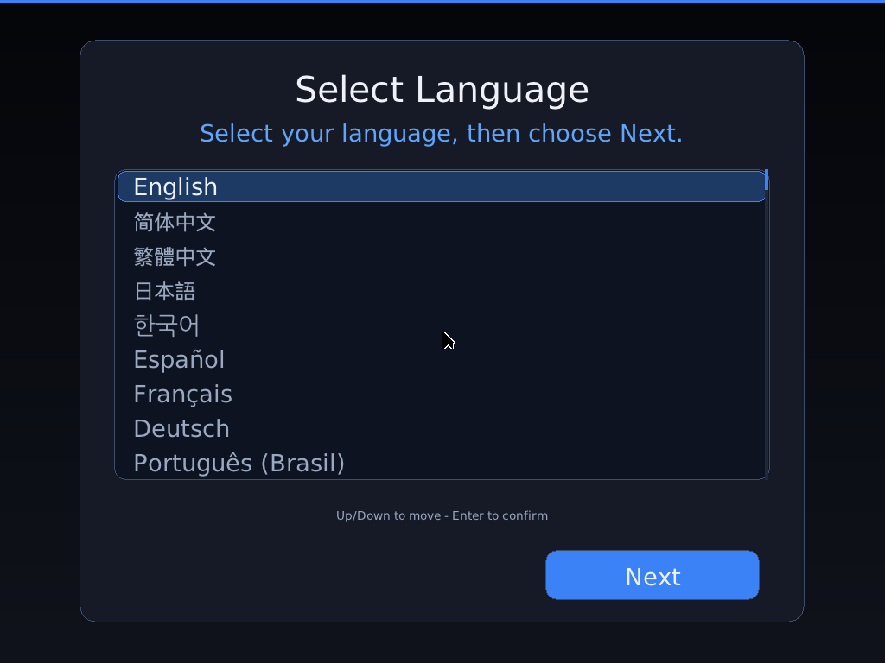
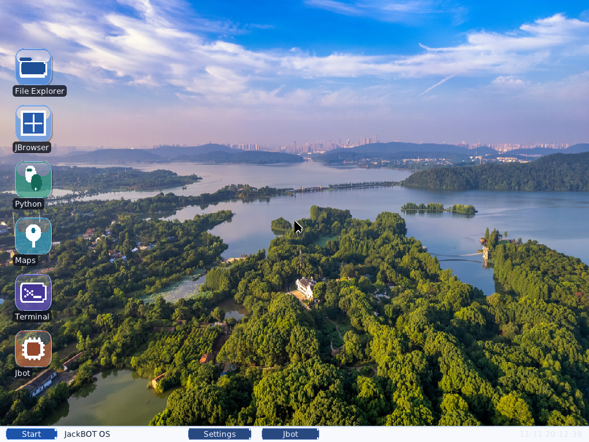

JackBOT OS
A from-scratch, 64-bit hobby operating system written in C and NASM. Multiboot2 + GRUB, a native graphical installer, a 205-language setup experience, a GPU-composited hardware cursor, and a TLS 1.2 HTTPS client — no Linux kernel underneath.
About
JackBOT OS (Jack Broad Omnibus Technique Operating System) is an independent operating
system built for learning and hands-on OS engineering. It boots through GRUB using the
Multiboot2 protocol, runs a self-written 64-bit kernel (GDT/IDT, paging, scheduler, system
calls, user-space isolation), and ships its own graphical stack, file system drivers and
applications — it is not a Linux distribution.
The v1.0.9 release integrates a from-scratch TLS 1.2 client into the HTTP client
— ECDHE/X25519 key exchange, AES-128-GCM record layer, SHA-256 PRF and
Finished-message verification — so https:// pages load and decrypt.
An AMD PCnet NIC driver brings up the VirtualBox default network adapter, and the PCI
compatibility database now covers 231 recognized device IDs.
Honest boundary: the server certificate chain is parsed but
NOT validated against a trust store (no CA bundle, no chain/signature
check), and TLS 1.3 is not implemented. The release keeps the bootable Live Desktop
mode (try the full desktop without installing), five system-management applications
(USB Devices, Battery & Power, Recycle Bin, File Explorer and Device Manager), and
real hardware enumeration: ACPI table/PM1-control-block parsing, USB host-controller
and root-hub port reading, and a live PCI device tree. It also builds on the
complete graphical installer (language → welcome → time zone → disk
partitioning → install), a first-boot OOBE wizard, real TrueType
anti-aliased text, full-screen adaptive layout, and a VMware SVGA II /
VirtualBox VMSVGA driver that hands the scanout to the virtual GPU and composites
the pointer in hardware, so there are no drag trails.
Important: Please test in a virtual machine (Oracle VirtualBox is the
recommended and most-tested target) before any physical-hardware use.
Key Features in v1.0.9
Graphical Installer
A native, mouse-driven wizard: language selection, disk detection, time zone/region, automatic or custom partitioning, FAT32 formatting and GRUB install to disk.
205 Languages & Real TTF
The very first installer screen lets you pick among 205 languages with native names, rendered by real TrueType fonts (Latin, CJK, Korean, Arabic, Thai and Devanagari fallbacks), falling back to English where a translation is missing.
First-Boot OOBE
After installation a first-run wizard sets display language, keyboard layout and time zone/region, and persists the choices to the on-disk JBOT.CFG configuration.
GPU Scanout & Hardware Cursor
A VMware SVGA II / VMSVGA driver negotiates native mode, maps the command FIFO and composites the pointer via DEFINE_ALPHA_CURSOR / MOVE_CURSOR — the GPU, not the framebuffer, draws the cursor.
Adaptive Full-Screen Desktop
The UI rescales to the actual resolution instead of drawing at a fixed small size, with a tiled window manager, taskbar and built-in applications.
Disk & Persistence
ATA/IDE LBA48 PIO, an MBR partitioner (up to four primary partitions), a FAT32 writer/reader and shutdown persistence of configuration and user files.
JCA Programs & Tooling
Run .jca programs compiled by the bundled JCA compiler, automate with .xjh batch scripts, and use the built-in micro-Python console and dozens of desktop apps.
Networking & Hardware Layer
A PCI layer with IRQ registration, e1000/RTL-8139/AMD-PCnet NIC drivers, ARP/ICMP/DHCP/DNS/TCP/HTTP/HTTPS (TLS 1.2 with X25519 + AES-128-GCM) and an expanded hardware-compatibility database.
Live Desktop & System Apps
Boot the ISO straight into the full desktop without installing, and manage the machine with USB Devices, Battery & Power (ACPI), Recycle Bin, File Explorer and Device Manager.
Real Hardware Enumeration
ACPI RSDP/FADT parsing with the PM1 power-control block, USB UHCI/OHCI/EHCI/xHCI host-controller and root-hub port detection, and a live PCI device tree with vendor/device IDs and IRQs.
Built-in Terminal
A real command shell (F9, or the Terminal icon) typing straight into the kernel: ls, cd, cat, run for .py programs, Open for files and folders, plus fs, mount and umount for partition-level filesystem access.
Partition Filesystem Probe
Every MBR/GPT partition is identified by its own boot-sector signature — FAT12/16/32, exFAT, NTFS, ext2/3/4, HFS+, APFS, ISO9660 — and any FAT volume can be mounted on demand instead of assuming the first one.
Screenshots (VirtualBox, VMSVGA)







User Manual
A ten-page field manual you turn by hand. Press a page edge and drag it across, the way you would turn real paper; the buttons and the arrow keys work too. The site stays English-only, so use your browser's own translation when you need another language.
GRAB THE PAGE EDGE AND PULL IT ACROSS
Download
JackBOT OS v1.0.9
Image file name: JackBOT-1.0.9.iso
64-bit hybrid ISO (BIOS + UEFI). Recommended VM: Oracle VirtualBox, 2048 MB RAM, VMSVGA graphics, PS/2 mouse.
Size: 65,220,608 bytes · Verify with SHA-256:
7b0ac03823ac9b05cf569e430f5e9381307579390ff3c2ba05222c285e19f3ab
Changelog v1.0.9
- v1.0.9 — built-in C compiler: a C front end (jcac) lowers a C subset (functions, locals, if/else, while, for, break/continue, short-circuit && and ||, compound assignment, printf/puts) to JCA bytecode and runs it on the in-kernel VM; the self-test that runs at boot on an installed system compiles and runs loop-sum, recursive fibonacci, gcd and boolean-logic programs and prints
[C] PASS. - v1.0.9 — liquid glass is back and switchable: windows, the Start menu, Settings and the Jbot window now blend over the wallpaper, and Settings → System has a "Liquid Glass" switch that applies live and is stored in JBOT.CFG.
- v1.0.9 — hardware probes: NVMe, Intel HDA and xHCI are identified through real register reads instead of stubs, next to AHCI/ATA, e1000/rtl8139/pcnet, AC97, PS/2, USB and VMSVGA.
- v1.0.9 — real HTTPS (TLS 1.2) in the built-in browser: a from-scratch TLS 1.2 client (ECDHE/X25519 key exchange, AES-128-GCM record layer, SHA-256 PRF, Finished-message verification) is integrated into the HTTP client; HTTPS pages load and decrypt correctly. Honest boundary: the server certificate chain is parsed but NOT validated against a trust store (no CA bundle, no chain/signature check), and TLS 1.3 is not implemented.
- v1.0.9 — AMD PCnet NIC driver: a new PCnet-PCI II / FAST III (Am79C970A/973) driver brings up the VirtualBox default network adapter; DHCP, DNS, TCP, HTTP and HTTPS now work with it (verified in VirtualBox: DHCP bound, https://example.com 584-byte page fetched through TLS).
- v1.0.9 — kernel memory-safety fixes: the user-process address-space activation race that faulted the boot-time self-test process at USER_BASE is fixed (CR3 is now switched before any user thread can be scheduled); the heap rejects size wrap-around, guards calloc multiplication overflow, validates block magic on realloc and poisons headers on free to catch double frees; page-table allocation failures no longer dereference NULL; the desktop wallpaper path no longer dies when the wallpaper buffer cannot be allocated.
- v1.0.9 — F2 settings-panel crash fixed: the wp_color divide-by-zero (w-1 == 0 when drawing a 1-pixel-wide thumbnail) is guarded, so opening the settings panel no longer faults.
- v1.0.9 — Python subset hardening: the built-in interpreter's container allocation, range size cap, split token bound and string-replace error path were hardened; the offline harness passes 52/52 cases and the built-in self-test.
- v1.0.9 — passive honeypot audit trail: the default-off honeypot module now writes one serial audit line per newly observed probe (unclaimed UDP, TCP SYN, ICMP echo) while still never sending a packet of its own.
- v1.0.9 — PCI compatibility database expanded to 231 recognized IDs: the detection table now covers additional NVIDIA/AMD/Intel display adapters, Intel I350/I217/I219 and Realtek 8125/8137/8138/8127 and Broadcom/Atheros/Mellanox Ethernet, more Intel/AMD/ASMedia/Marvell/VIA AHCI controllers, Intel/Samsung/WD/Kingston/Micron/Crucial/Phison NVMe IDs, Realtek/AMD/NVIDIA/Intel/VIA HDA and Creative SB X-Fi/Audigy audio, and extra EHCI/OHCI/xHCI USB host controllers. These remain detection/probe entries that log a serial line and return success; full functional command-layer drivers for AHCI/SATA, NVMe and e1000e are still next-stage work and are not claimed as working.
- v1.0.9 — HTTPS-aware HTTP client, HMAC-SHA256 primitive and TLS stub: the URL parser recognizes
https://and defaults to port 443; a built-in HMAC-SHA256 primitive passes the RFC 4231 Test Case 1 and Test Case 2 vectors at boot, and a TLS state-machine/constant skeleton is in place. Honest boundary: the TLS handshake, ServerHello/Certificate parsing, X.509 chain validation, key exchange and symmetric record encryption are not implemented; an HTTPS request is stopped before DNS with an explicit "TLS engine unavailable" state instead of being sent in plaintext. - v1.0.9 — expanded PCI compatibility database: more common Intel PRO/1000 and Realtek Ethernet IDs, additional Intel/AMD/ASMedia AHCI SATA controllers, and more Intel/AMD/NVIDIA HD Audio controllers are now recognized during PCI enumeration. Newer Intel I218/I219/I211 adapters are matched to the generic Ethernet probe rather than the legacy e1000 driver. These are detection/probe entries; full functional drivers for AHCI, NVMe and e1000e remain next-stage work.
- v1.0.9 — version consistency: boot banner, About panel, System Update, installer marker, Start menu and HTTP User-Agent all report 1.0.9; the build no longer depends on the optional disk-image target for ISO production.
- v1.0.9 — real networked browser (verified in VirtualBox): the e1000/82540EM driver now brings the link up (DHCP bound), the TCP stack loads pages over plain HTTP, and JBrowser renders real HTTP 200 pages with relative-URL navigation and automatic 302-redirect following. Keyboard-only browsing is supported (Ctrl+L focuses the address bar). HTTPS/TLS is not implemented yet.
- v1.0.9 — AC97 audio and boot chime: an Intel AC97/STAC9700 driver plays a PCM boot sound through the VirtualBox sound card.
- v1.0.9 — voice assistant and Bluetooth/LED panels: Jbot Voice (mic-level UI) and a Bluetooth & Lamps control panel (adapter detection, color/brightness lamp UI). These are interface/control skeletons: on-device speech-to-text and the full L2CAP/GATT pairing stack are clearly marked as next-stage work.
- v1.0.9 — new Live Desktop boot mode: select "Try JackBOT OS 1.0 (Live Desktop)" in GRUB to boot the full desktop with no disk and no install.
- v1.0.9 — five new system-management apps: USB Devices, Battery & Power (ACPI), Recycle Bin, File Explorer and Device Manager.
- v1.0.9 — real hardware enumeration, verified in VirtualBox: ACPI RSDP/FADT parsing (PM1 control block, AC-adapter detection), USB host-controller and root-hub port enumeration (OHCI/UHCI/EHCI/xHCI), and a PCI device tree showing vendor/device IDs, BDF and IRQs.
- v1.0.9 — FAT32 directory listing and file move backing the Recycle Bin (\RECYCLED) and File Explorer (delete, restore, empty).
- New native graphical installer: language, welcome, time-zone/region, automatic or custom disk partitioning, progress and completion pages.
- Setup language list expanded to 205 languages with native names and English fallback; real TrueType fonts (Latin/CJK/Korean/Arabic/Thai/Devanagari).
- First-boot OOBE wizard (language, keyboard layout, time zone), persisted to JBOT.CFG.
- VMware SVGA II / VMSVGA native-mode driver: GPU scanout take-over and GPU-composited hardware cursor (no drag trails).
- Full-screen adaptive layout that scales to the real resolution, replacing the earlier fixed-size small UI.
- Installer now copies every fallback TTF to the installed system so CJK/Korean/Arabic/Thai/Devanagari render after first boot.
- Expanded PCI hardware-compatibility database and a generic PCI/IRQ driver framework.
- Official CPython 3.12 source tree added with an explicit porting-layer skeleton and gap list.
- MBR partitioner, FAT32 formatter, ATA LBA48 driver and GRUB-to-disk install verified end to end in VirtualBox.